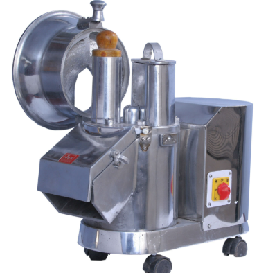
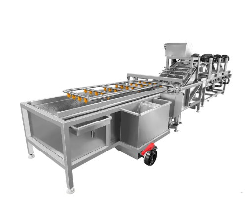
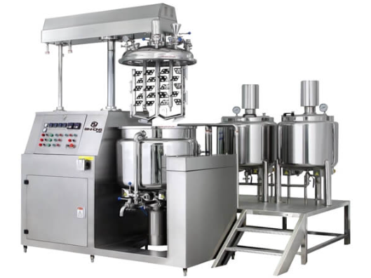
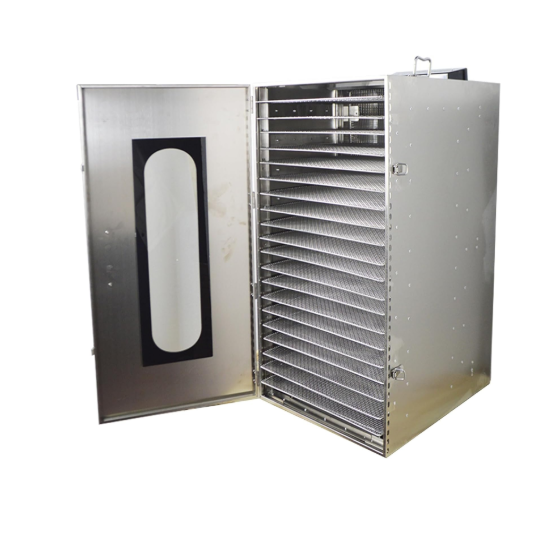
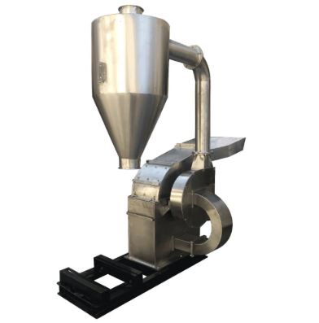
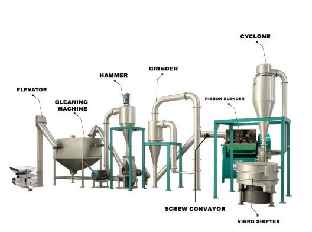
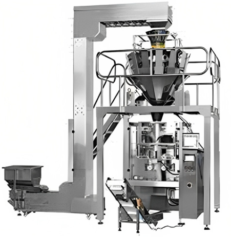
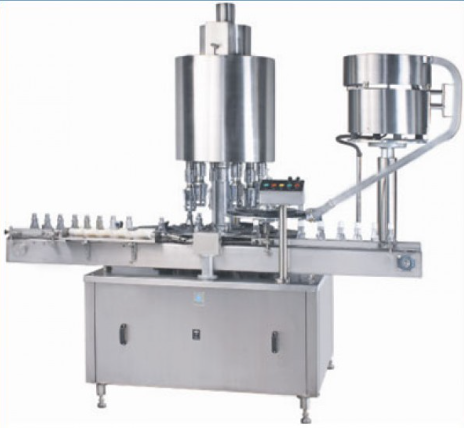
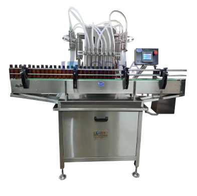

Salvin Industries specializes in designing and manufacturing Special Purpose Machines (SPM) that are custom-engineered to automate complex manufacturing tasks that standard equipment cannot handle efficiently. These machines are tailor-made for high-volume operations to maximize productivity and precision across various sectors.
Salvin Industries provides a comprehensive range of custom industrial solutions, particularly for the food, pharmaceutical, and cosmetic industries. We are an engineering and technology conglomerate based in Ahmedabad, India, specializing in Automation 4.0 and turnkey industrial solutions. We provide advanced manufacturing systems with a focus on digital transformation and "smart" factory setups.
Advanced engineering tailored to specific industrial requirements, breaking the limits of standardized equipment.
Our Special Purpose Machines are engineered from the ground up to solve highly specific, complex manufacturing challenges that off-the-shelf equipment simply cannot address. We analyze your unique product behavior, required throughput, and spatial constraints to build customized mechanical and robotic systems.
A cross-section of our highly specialized manufacturing systems for commercial food preparation and safety.

Automate your food preparation with our heavy-duty commercial slicer machines. Designed for fruits, vegetables, and meats, our precision slicers deliver uniform cuts at high speeds. Perfect for large-scale food processing plants looking to increase efficiency and reduce labor costs.

Ensure 100% food safety with our fully automated commercial washing machines. Using advanced high-pressure bubble washing, our equipment expertly removes dirt, pesticides, and bacteria from fresh produce, serving as the ultimate solution for food exporters and packhouses.

Achieve perfect homogeneity with our heavy-duty commercial mass blenders and ribbon mixers. Engineered specifically for dry powders, granules, and spices, our industrial blending machines ensure uniform mixing in large batches, drastically reducing your production time.

Preserve core nutritional value and extend shelf life using our industrial tray dryers. Designed for fruits, vegetables, herbs, and spices, our commercial drying equipment maintains consistent air flow and precise temperature control for optimal moisture removal.
End-to-end processing solutions for grinding, mixing, and producing ultra-fine spices.

Salvin's high-speed industrial pulverizer machines are designed for the fine grinding of spices, grains, and food products. Built with SS304 stainless steel, our pulverizers ensure maximum output, dust-free operation, and consistent food-grade powder quality.

Design and set up your complete commercial spice processing plant with our turnkey automation solutions. From cleaning and roasting to multi-stage grinding and sifting, our systems handle massive capacities of turmeric, coriander, chilli, and mixed spices without manual intervention.
High-speed packaging and filling machines tailored for chocolates, biscuits, powders, and viscous liquids.

Streamline your packaging process with our fully automatic pouch packaging machines. Specifically engineered for snacks, spices, grains, and liquids, these robust systems integrate precise volumetric filling, airtight nitrogen flushing, and secure heat sealing into a single compact, high-speed unit.
Tailor-made liquid and powder filling machines, alongside specialized high-speed capping systems.

Achieve unmatched accuracy and eliminate product waste with our industrial filling machines. Specialized for both viscous liquids and fine powders, our GMP-compliant fillers use advanced volumetric and auger-based intelligence to guarantee exact fill weights across every single container, bottle, or jar.

Secure your products securely with our heavy-duty capping and sealing systems. From robust screw cappers to high-speed induction sealers, our closure technology guarantees a leak-proof and tamper-evident finish for bottles of all shapes and sizes, integrating seamlessly into your existing production line.
Engineered for absolute precision, unyielding durability, and intelligent operations. We build systems that perform dynamically.
Machines are typically equipped with PLC-based control systems and interactive HMI touch screens for real-time monitoring of flow rates, temperature, and torque.
Utilizing strictly food-grade SS316L/SS304 stainless steel and incorporating Clean-In-Place (CIP) compatibility for rapid, effortless sanitization.
Deep options for volumetric or flow-meter filling technology to achieve extraordinary accuracy (up to ±1%) and drastically reduce product waste.
Integration of the latest technology for end-to-end automated processing, such as our "One Touch" system for puffed rice where the product is never touched by hand.
Systems feature Programmable Logic Controller (PLC) panels acting as the brain, linked directly to HMI interfaces for instantaneous, facility-wide parameter adjustments.
The company actively conducts data-driven audits prior to design to identify bottlenecks and transform traditional operations into "future-ready" plants.
They provide technical and management consultancy to help clients effortlessly adopt Industry 4.0 standards, including advanced digital twin technologies and automated quality inspection arrays.